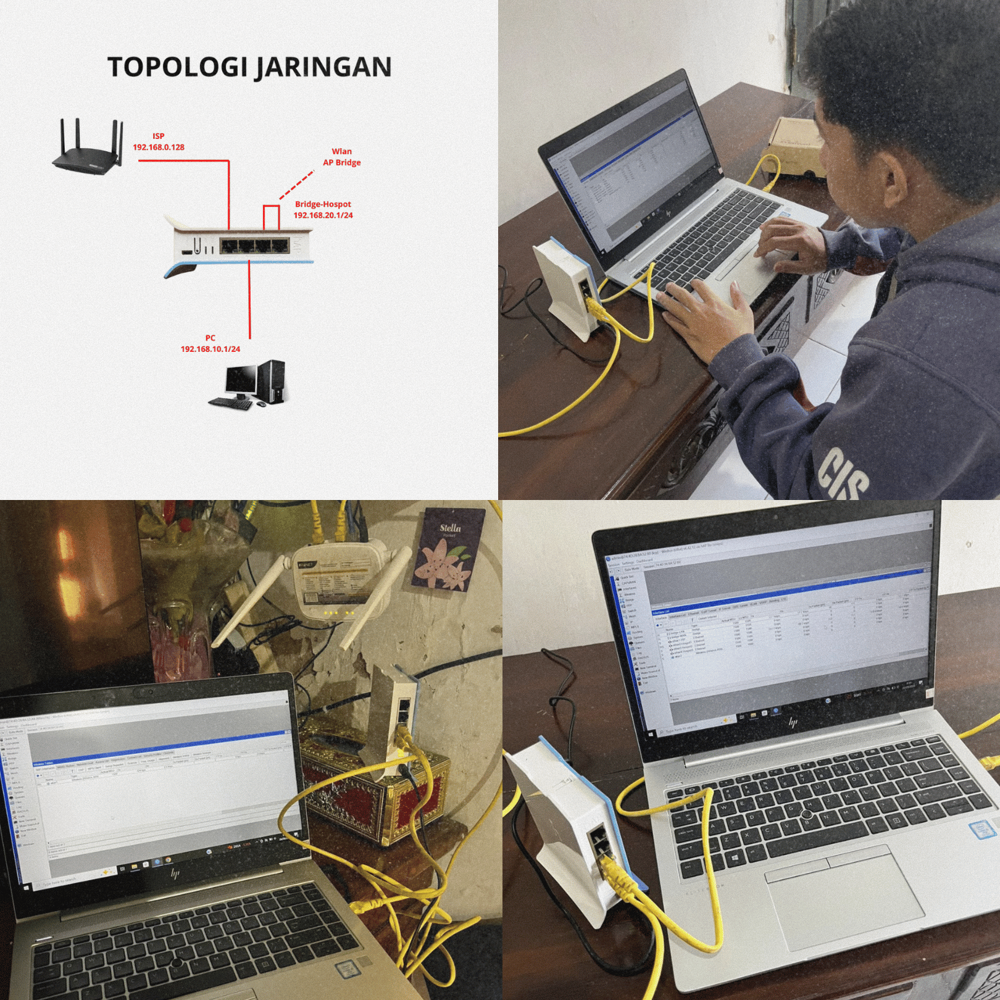
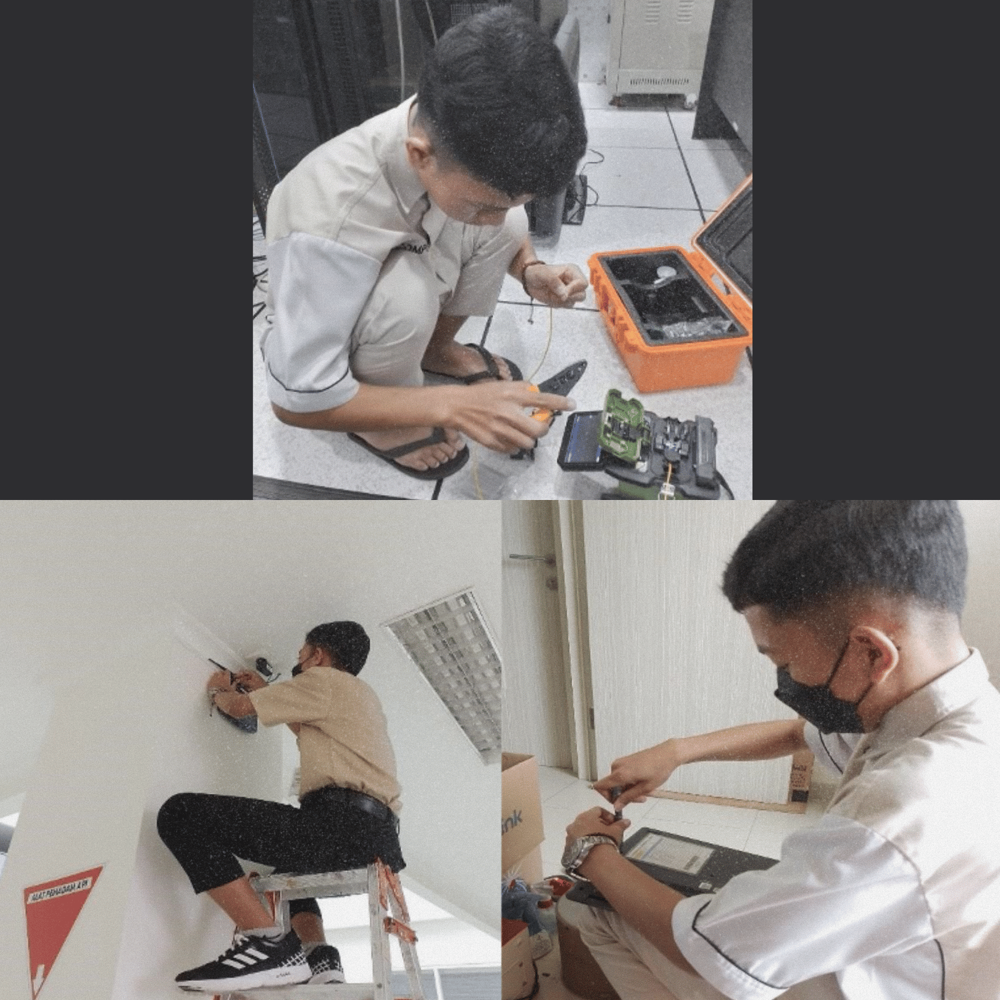
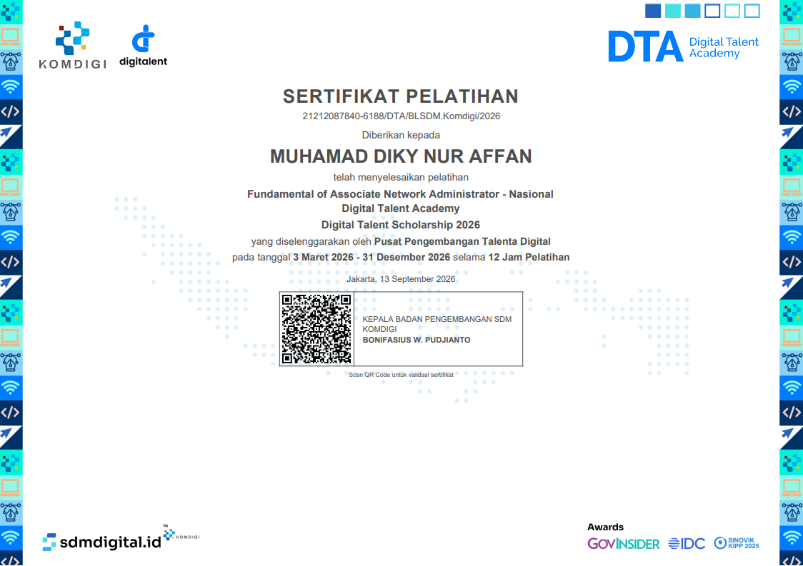
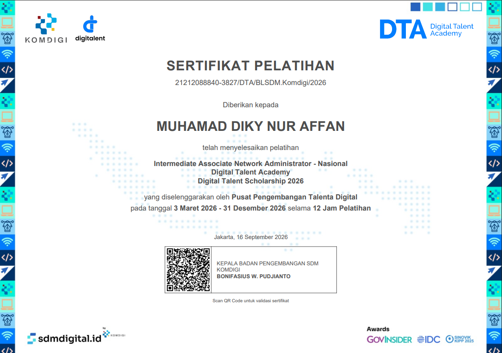
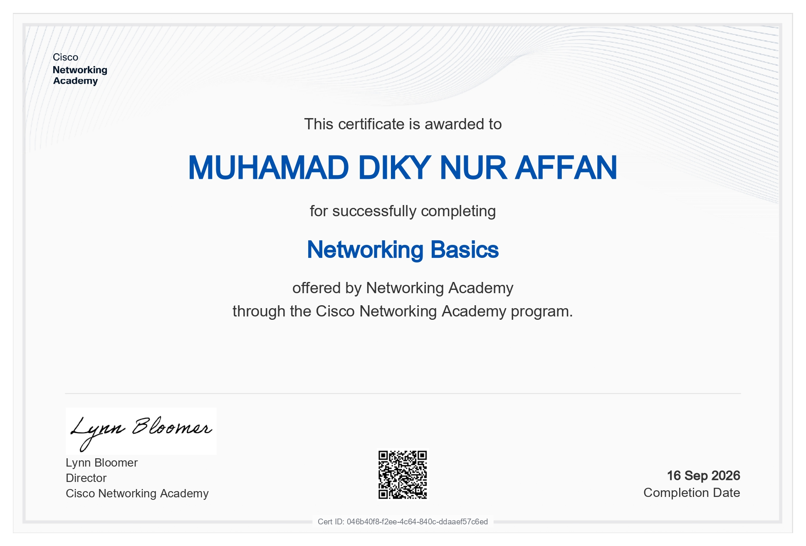
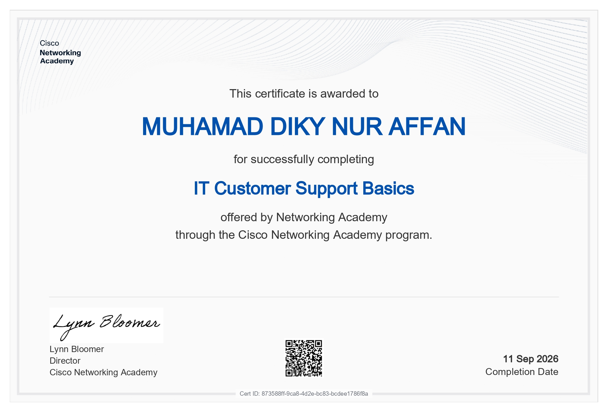

Mahasiswa IT dengan fundamental kuat di bidang troubleshooting hardware/software dan administrasi jaringan. Berkomitmen untuk terus belajar dan berkembang dalam memberikan dukungan teknis yang handal bagi operasional perusahaan.
Mengenal lebih dekat latar belakang saya di dunia teknologi informasi.
Mahasiswa Jurusan Sistem Informasi dengan latar belakang pendidikan SMK Teknik Komputer Jaringan serta pengalaman praktis sebagai IT Support di Rumah Sakit. Memiliki kompetensi kuat dalam manajemen perangkat keras, perangkat lunak, troubleshooting sistem, dan jaringan komputer. Saat ini aktif meningkatkan keterampilan teknis secara mandiri dan berorientasi untuk berkontribusi profesional sebagai IT Support atau Network Engineer yang andal dalam menjaga keandalan infrastruktur teknologi perusahaan.
Tools dan perangkat keras/lunak yang biasa saya operasikan.
PC, Laptop, Server Assembly
MikroTik, Cisco, LAN/WAN, TCP/IP
Windows Server, Linux Ubuntu, Antivirus
Remote Desktop, User Support
Beberapa implementasi infrastruktur atau aplikasi web yang pernah dikerjakan.

Pemasangan router MikroTik, manajemen bandwidth, dan pengaturan dan pembagian IP untuk jalur jaringan.
Detail Projek →
Penyambungan kabel fiber optik untuk kebutuhan instalasi server dan perawatan hardware harian.
Detail Projek →Bukti kompetensi resmi di bidang jaringan dan IT Support.


Kompeten dalam konfigurasi routing, firewall, dan wireless pada perangkat MikroTik.
📥 Download Sertifikat
Pemahaman mendalam mengenai arsitektur jaringan LAN/WAN dan protokol komunikasi.
📥 Download Sertifikat
Menguasai dasar troubleshooting sistem operasi, administrasi jaringan, dan layanan pelanggan.
📥 Download SertifikatPunya tawaran pekerjaan, proyek infrastruktur, atau sekadar ingin berdiskusi seputar IT? Silakan kontak saya.
Kirim Email